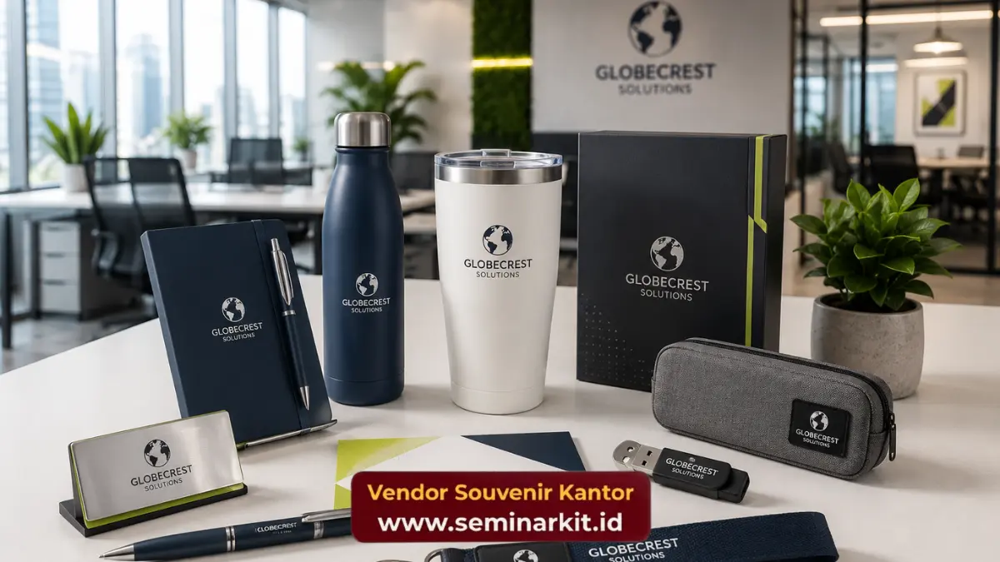

Paket souvenir kantor adalah kumpulan barang bernilai guna yang diberikan perusahaan kepada karyawan, klien, atau mitra bisnis sebagai bentuk apresiasi dan penguat citra merek. Layanan ini kini tersedia lengkap dan siap kirim di vendorsouvenirkantor.web.id.
- Paket souvenir kantor mencakup aneka pilihan mulai dari alat tulis premium, hampers, hingga merchandise custom berlogo perusahaan.
- Pemesanan dapat disesuaikan dengan anggaran, jumlah karyawan atau klien, serta kebutuhan acara tertentu seperti gathering atau end of year party.
- Kualitas kemasan dan bahan menjadi faktor penentu utama kesan profesional yang diterima penerima souvenir.
- Proses pemesanan paket souvenir kantor umumnya melibatkan konsultasi kebutuhan, penentuan desain, produksi, dan pengiriman.
- vendorsouvenirkantor.web.id menyediakan pendampingan dari tahap konsultasi hingga barang siap didistribusikan ke penerima.
Apa Itu Paket Souvenir Kantor dan Mengapa Penting bagi Bisnis?
Paket souvenir kantor adalah rangkaian barang fungsional dan estetis yang dikemas khusus untuk mewakili identitas perusahaan saat diberikan kepada pihak internal maupun eksternal.
Keberadaannya penting karena menjadi salah satu bentuk komunikasi non-verbal yang memperkuat hubungan bisnis.
Bagi banyak perusahaan, momen memberikan souvenir bukan sekadar formalitas. Souvenir yang tepat dapat meninggalkan kesan mendalam, membangun loyalitas, dan menjadi pengingat visual atas kerja sama yang terjalin.
Dalam konteks korporat, paket souvenir kantor sering digunakan pada acara seperti pelantikan karyawan baru, ulang tahun perusahaan, kunjungan klien, hingga penutupan tahun kerja.
Selain fungsi seremonial, paket souvenir kantor juga berperan sebagai media branding berjalan. Setiap kali penerima menggunakan barang tersebut, secara tidak langsung nama dan logo perusahaan ikut terpapar ke lingkungan sekitarnya.
Inilah yang membuat investasi pada souvenir berkualitas dianggap strategis, bukan sekadar biaya operasional semata.
Manfaat Memberikan Souvenir Kantor bagi Citra Perusahaan
Pemberian souvenir kantor secara konsisten memberikan dampak positif terhadap bagaimana perusahaan dipersepsikan oleh karyawan maupun mitra eksternal.
Pertama, souvenir yang berkualitas menunjukkan bahwa perusahaan memperhatikan detail dan menghargai relasi yang dibangun.
Kesan ini secara umum meningkatkan rasa dihargai pada penerima, baik itu karyawan yang merasa diakui kontribusinya maupun klien yang merasa dijaga hubungannya.
Kedua, souvenir kantor yang didesain dengan identitas visual perusahaan turut memperkuat brand recall. Barang seperti tumbler, notebook, atau tas kerja yang digunakan sehari-hari berpotensi dilihat berulang kali oleh orang lain, sehingga secara alami memperluas jangkauan pengenalan merek tanpa biaya iklan tambahan.
Ketiga, dari sisi budaya kerja internal, souvenir kantor turut berkontribusi pada peningkatan semangat dan rasa memiliki karyawan terhadap perusahaan.
Kondisi ini pada gilirannya dapat berdampak pada produktivitas dan retensi karyawan dalam jangka panjang.
Apa Saja Jenis Paket Souvenir Kantor yang Paling Diminati?
Jenis paket souvenir kantor yang paling diminati umumnya terbagi menjadi kategori alat tulis premium, peralatan kerja fungsional, hampers makanan atau minuman, serta merchandise custom berlogo.
Kategori alat tulis premium mencakup pulpen eksekutif, notebook kulit, dan agenda tahunan yang cocok untuk kebutuhan formal seperti seminar atau rapat direksi.
Kategori peralatan kerja fungsional meliputi tumbler, power bank, hingga tas laptop yang digunakan secara rutin sehingga nilai gunanya tinggi.
Hampers makanan atau minuman umumnya dipilih untuk momen perayaan seperti akhir tahun atau hari besar keagamaan, di mana kesan personal dan kehangatan lebih diutamakan dibandingkan fungsi jangka panjang.
Sementara itu, merchandise custom berlogo seperti gantungan kunci, mug, atau kaos korporat sering dipakai dalam acara gathering, seminar, maupun sebagai bagian dari kit peserta acara perusahaan.
Setiap kategori memiliki karakteristik dan target penerima yang berbeda, sehingga pemilihan jenis paket souvenir kantor sebaiknya disesuaikan dengan tujuan acara serta profil penerima agar pesan yang ingin disampaikan tersampaikan secara optimal.

Bagaimana Cara Memilih Paket Souvenir Kantor yang Tepat?
Cara memilih paket souvenir kantor yang tepat dimulai dari menentukan tujuan pemberian, mengenali profil penerima, menyesuaikan anggaran, dan memastikan kualitas produk sesuai dengan citra perusahaan yang ingin dibangun.
Langkah pertama adalah memahami konteks acara. Souvenir untuk klien besar tentu memerlukan sentuhan yang lebih eksklusif dibandingkan souvenir untuk seluruh karyawan dalam jumlah besar.
Langkah kedua adalah mempertimbangkan fungsi barang dalam kehidupan sehari-hari penerima, karena barang yang benar-benar terpakai akan memberikan nilai branding lebih lama dibandingkan barang yang hanya disimpan.
Anggaran juga menjadi pertimbangan penting. Perusahaan dapat menetapkan kisaran biaya per unit terlebih dahulu, kemudian menyesuaikan pilihan produk dan tingkat kustomisasi berdasarkan kisaran tersebut.
Terakhir, pastikan vendor yang dipilih mampu menjaga konsistensi kualitas produksi, terutama untuk pemesanan dalam jumlah besar, agar hasil akhir tetap seragam dan representatif.
Tim vendorsouvenirkantor.web.id siap membantu proses ini mulai dari konsultasi kebutuhan awal hingga rekomendasi produk yang paling sesuai dengan anggaran dan tujuan perusahaan Anda.
Faktor yang Mempengaruhi Harga Paket Souvenir Kantor
Harga paket souvenir kantor umumnya dipengaruhi oleh jenis bahan, tingkat kustomisasi, jumlah pesanan, serta kompleksitas proses produksi seperti sablon, bordir, atau ukir logo.
Bahan premium seperti kulit asli atau logam berlapis tentu memiliki biaya produksi lebih tinggi dibandingkan bahan standar.
Tingkat kustomisasi, misalnya penambahan warna khusus sesuai brand guideline perusahaan, juga dapat menambah biaya produksi.
Selain itu, jumlah pesanan turut memengaruhi harga per unit, karena pemesanan dalam skala besar umumnya memperoleh efisiensi biaya dibandingkan pemesanan satuan.
Waktu pengerjaan juga menjadi variabel harga. Permintaan dengan tenggat waktu singkat dapat dikenakan biaya tambahan karena membutuhkan prioritas produksi.
Oleh karena itu, merencanakan pemesanan souvenir kantor jauh hari sebelum acara sangat disarankan agar perusahaan memperoleh harga yang lebih kompetitif tanpa mengorbankan kualitas.
Kesalahan Umum saat Memesan Souvenir Kantor
Beberapa kesalahan umum yang sering terjadi saat memesan souvenir kantor antara lain kurang memperhitungkan waktu produksi, memilih barang tanpa mempertimbangkan fungsi bagi penerima, serta mengabaikan konsistensi desain dengan identitas merek perusahaan.
Kesalahan lain yang cukup sering terjadi adalah tidak melakukan pengecekan sampel sebelum produksi massal, sehingga hasil akhir berisiko tidak sesuai ekspektasi dari segi warna, ukuran, atau kualitas cetak logo.
Perusahaan juga terkadang kurang memperhitungkan biaya pengiriman dan pengemasan tambahan, terutama untuk distribusi ke berbagai kota atau cabang.
Menghindari kesalahan-kesalahan ini dapat dilakukan dengan berkomunikasi secara detail bersama tim produksi, meminta contoh produk sebelum pemesanan dalam jumlah besar, serta menetapkan linimasa yang realistis sejak awal perencanaan.
Kapan Waktu Terbaik Memesan Souvenir Kantor untuk Perusahaan?
Waktu terbaik memesan souvenir kantor adalah minimal beberapa minggu sebelum acara berlangsung, khususnya untuk pesanan dengan kustomisasi logo atau jumlah besar yang memerlukan waktu produksi lebih panjang.
Pada periode tertentu seperti menjelang akhir tahun atau musim penghargaan karyawan, permintaan souvenir kantor cenderung meningkat sehingga antrean produksi menjadi lebih padat.
Memesan lebih awal memberikan keleluasaan bagi perusahaan untuk melakukan revisi desain, memastikan kualitas, dan menghindari biaya tambahan akibat pengerjaan kilat.
Bagi perusahaan yang rutin memberikan souvenir setiap tahun, menjalin kerja sama jangka panjang dengan satu penyedia dapat membantu mempercepat proses karena data desain dan preferensi perusahaan sudah tersimpan sebelumnya.
Wujudkan Souvenir Kantor Terbaik untuk Perusahaan Anda
Paket souvenir kantor yang dipilih dengan tepat mampu memperkuat citra profesional, mempererat relasi bisnis, dan meningkatkan apresiasi karyawan secara berkelanjutan.
Dari alat tulis premium hingga merchandise custom berlogo, setiap pilihan memiliki peran strategis dalam membangun kesan positif terhadap perusahaan Anda.
Jangan biarkan momen penting perusahaan Anda terlewat tanpa souvenir yang berkesan. Konsultasikan kebutuhan paket souvenir kantor Anda sekarang bersama vendorsouvenirkantor.web.id dan dapatkan rekomendasi produk yang sesuai dengan anggaran serta identitas merek perusahaan Anda.

Banner promosi: klik gambar untuk langsung terhubung ke WhatsApp tim sales.